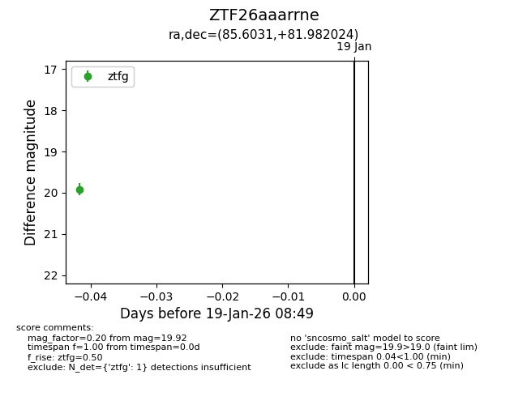
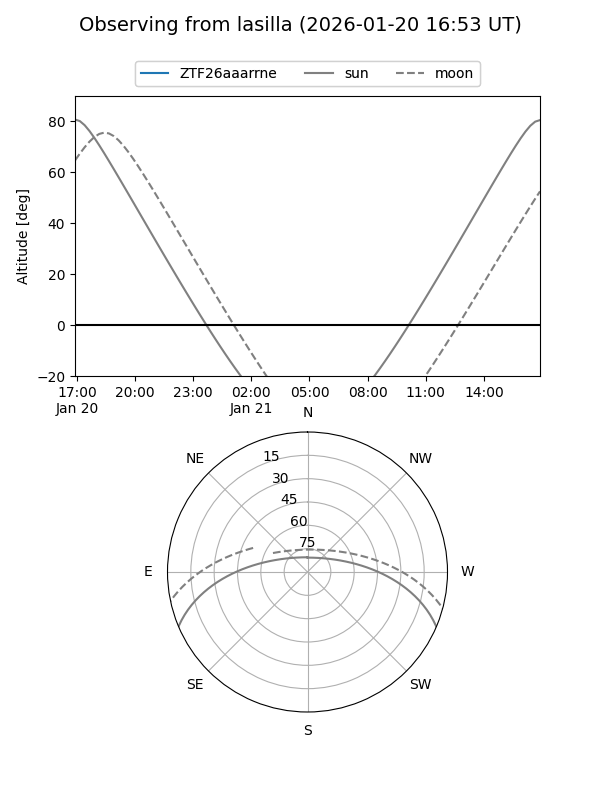
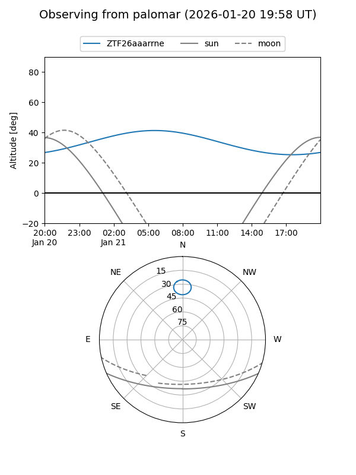

ZTF26aaarrne
Target ZTF26aaarrne at 2026-01-19 08:50
Aliases and brokers:
FINK: link
Lasair: link
ALeRCE: link
alt names
ZTF26aaarrne (ztf,fink_ztf)
Coordinates:
equatorial (ra, dec) = 85.6031,+81.98202
equatorial (HMS+DMS) = 05:42:24.74,+81:58:55.28
galactic (l, b) = (131.3495,+24.50047)
Flags:
Photometry:
last ztfg=19.92
1 ztfg detections
Lightcurve

Visibility


Additional plots